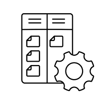
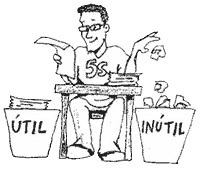

Que son las 5s?
Las 5s son una metodologia de origen japones que buscan mejorar la organizacion y eficiencia en el trabajo. Especialmente en entornos industriales y oficinas. Su nombre proviene de las 5 palabras que inician con "S" y cada una representa un paso clave para tener un ambiente de trabajo mas limpio, organizado y productivo.
Seiri (Clasificar)
Tomar prioridad a lo necesario antes que lo innecesario. identificar lo que es util en el espacio de trabajo para borrarlo, lo que nos permite tener solo lo necesario, evitando distracciones.
Seiton (Ordenar)
Organizar de manera eficiente lo que quedó después de clasificar. Cada cosa debe tener un lugar designado para que sea fácil de encontrar y utilizar, ahorrando tiempo y esfuerzo.

Seiso (Limpiar)
Mantener el área de trabajo limpia y libre de desorden. Se trata de una limpieza regular para asegurar que las herramientas y el espacio de trabajo estén en condiciones óptimas.
Seiketsu (Estandarizar)
Crear reglas y procedimientos que mantengan el orden y la limpieza conseguidos en los pasos anteriores. Esto incluye crear estándares visuales o rutinas que aseguren que el área de trabajo siga siendo eficiente.

Shitsuke (Disciplina)
Fomentar el compromiso de todos para seguir las 5S. Implica mantener la autodisciplina y el hábito de cumplir con las reglas establecidas, asegurando que los beneficios de la metodología se mantengan a largo plazo.